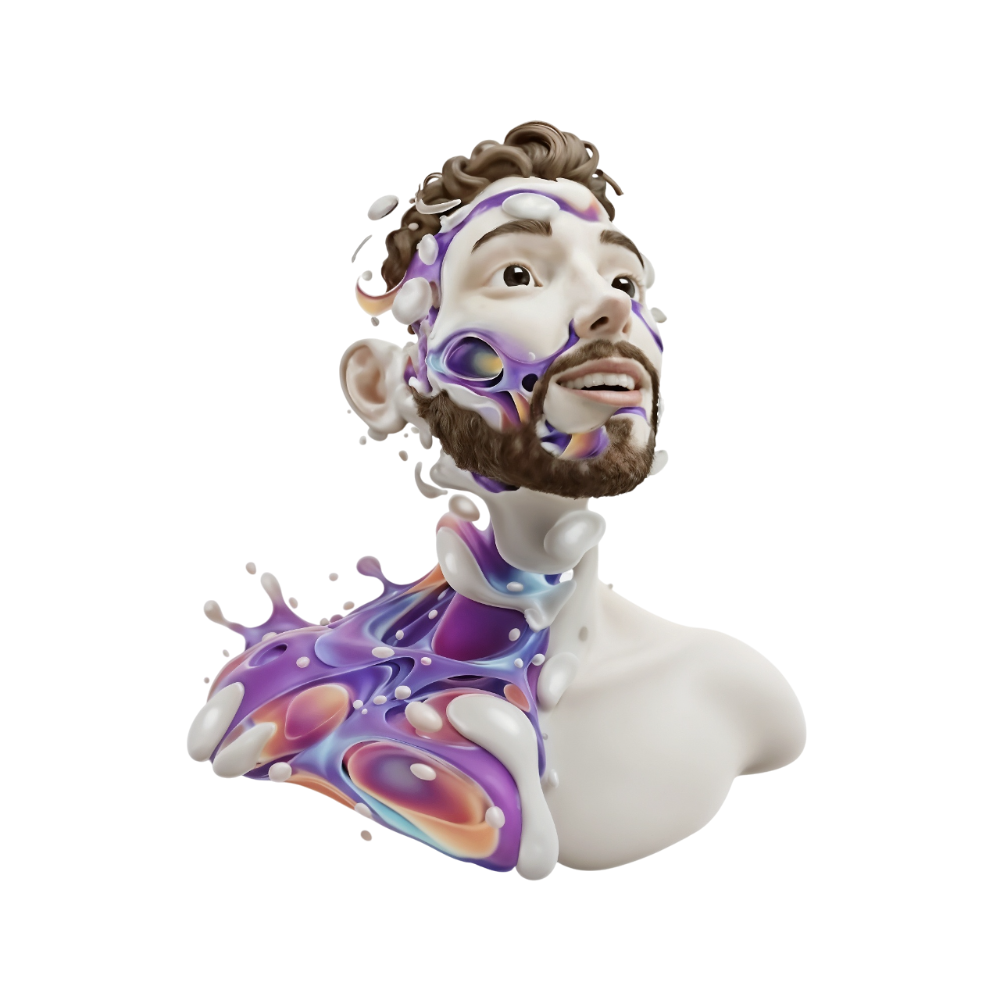
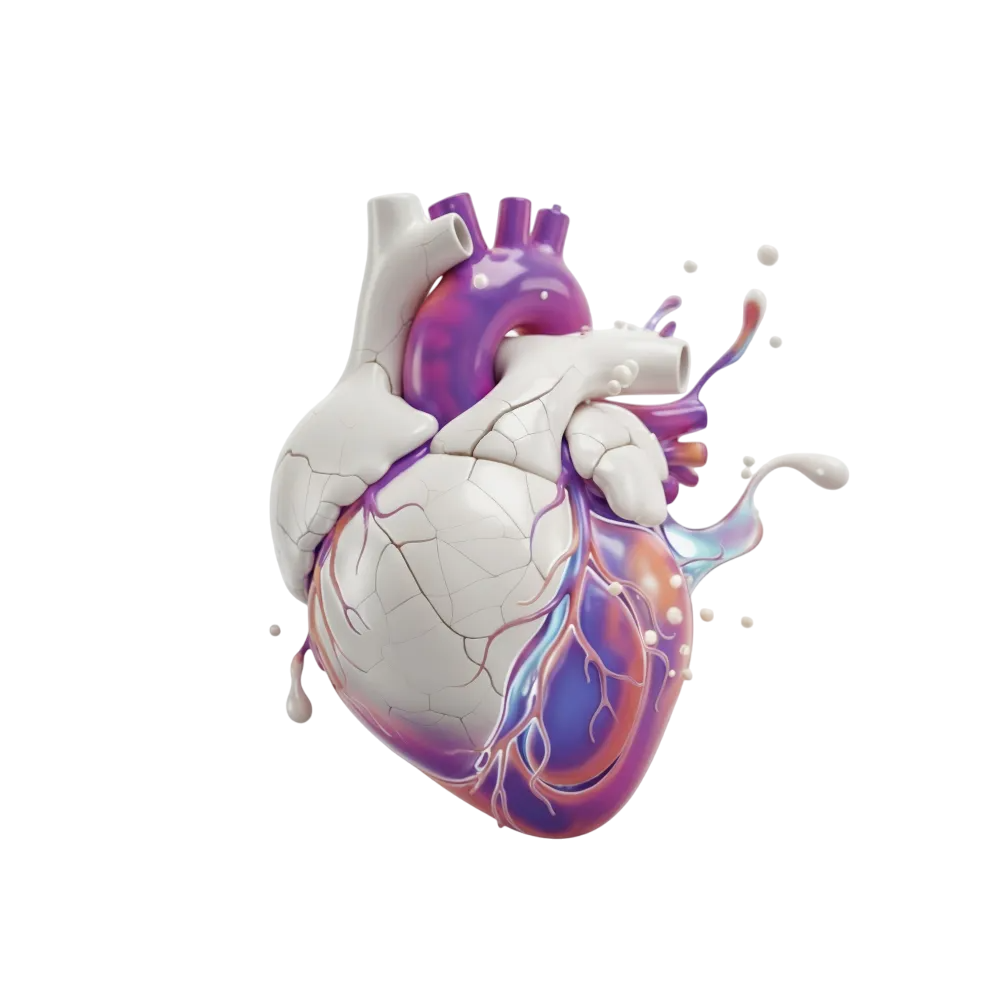
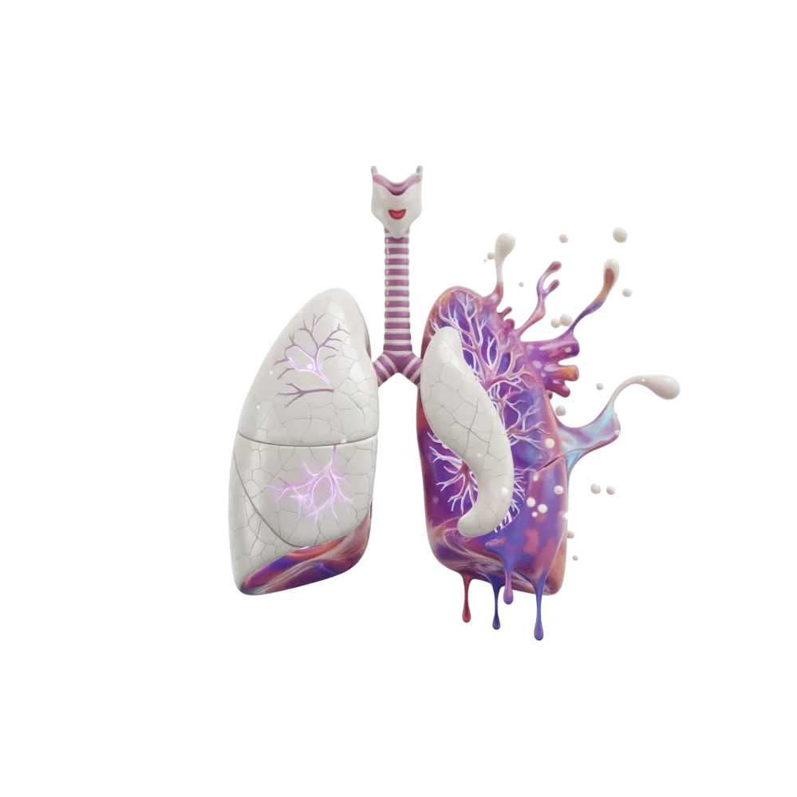
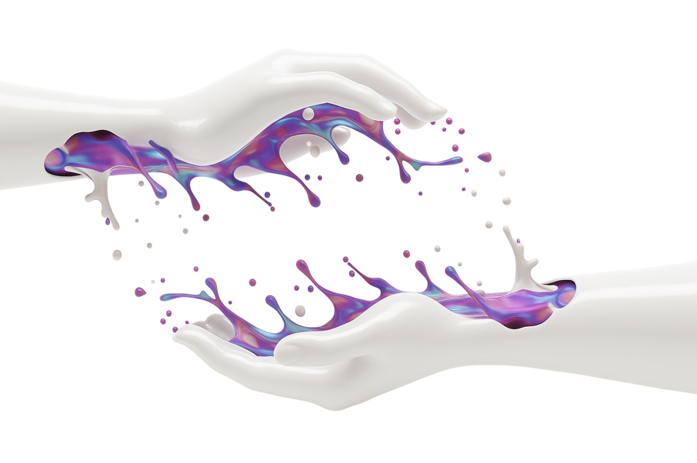
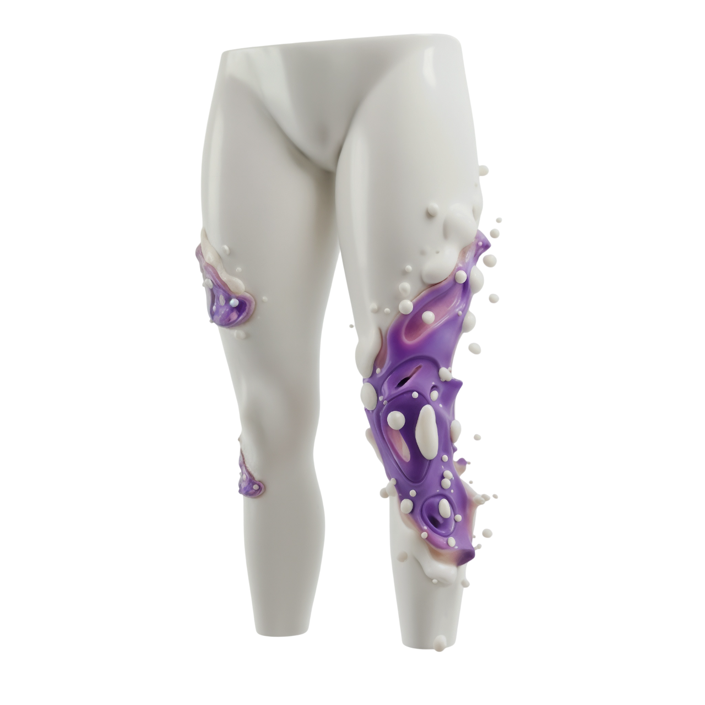
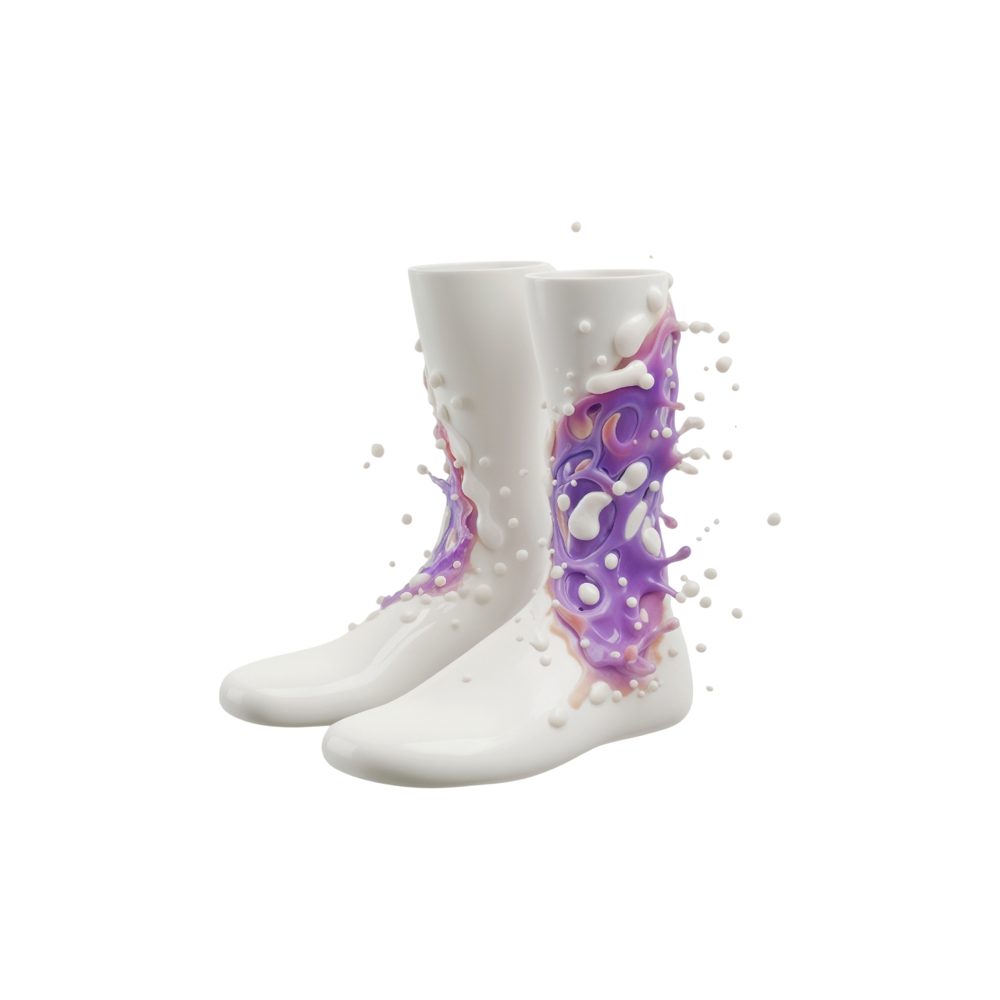

Actuellement en BUT Informatique 2ème année à l'IUT de Lens, je cherche à transformer la théorie (la Tête) en projets concrets. Mon objectif est de concevoir des expériences qui sont à la fois innovantes et basées sur une logique solide pour promouvoir un code fonctionnel et durable.
Mon Curriculum Vitae
Présentation
Voyez ce site comme mon CV interactif, détaillant les compétences que j'ai acquises. Plus qu'un CV, ce portfolio est la vitrine de mon potentiel. Il démontre ma capacité à lier ma créativité au code, pour relever les défis de demain.


Le Cœur
Passion
Fondations Logiques & Théorie du Design
Le Cœur représente ma passion pour le code et les principes fondamentaux de l'informatique et du design. C'est la base théorique de mon cursus : l'algorithmique, les structures de données, l'architecture logicielle, et la théorie du design.
La création de mes propres applications et projets personnels représente le moteur principal de mon apprentissage et me permet d'aborder chaque défi avec une détermination inébranlable.
Mon Cursus
Formation
Mes projets personnels et le fait de créer mes propres applications sont ce qui me donne envie d'apprendre et me permet d'aborder chaque défi avec détermination.
Les Poumons
Vision
Formation Continue & Innovation
Les Poumons symbolisent ma capacité à m'inspirer des nouveautés et tendances techniques, à en tirer le maximum en l'adaptant à mes projets de code et de conception. J'adore les nouvelles technologies et ce cycle d'apprentissage nourrit à la fois mon design et mon développement.
Actualisation Technique
Formation continue
J'assure une formation continue pour maîtriser les standards (Accessibilité, SEO) et intégrer les outils de demain dans mes travaux.
Conception & Architecture
Développement App
Je traduis mes inspirations en conceptions (UX/UI et architecture logicielle), en m'assurant que l'application est intuitive pour l'utilisateur et son code bien structuré pour l'équipe.


Les Mains
Projets
Réalisations Académiques & Personnelles
Les Mains illustrent l'application concrète de mes connaissances. Voici quelques projets, issus de mon parcours académique et de mes initiatives personnelles, où j'ai assemblé le code (le Cœur) et le design (la Vision).
LenSymphony (Synthétiseur musical)
Application permettant de générer et de lire des sons à partir de notes musicales (avec fréquences, durées, effets sonores et harmonies). Objectif : comprendre la synthèse sonore numérique et la gestion d'échantillons audio.
Projet Universitaire
Java
CineHub
Plateforme de type streaming permettant de consulter, rechercher et gérer une liste de films/séries avec un back-end Laravel (connexion à une base de données et API).
En cours (Universitaire)
PHP (Laravel)
Liquidia
Application mobile/web sur le thème des cocktails. Permet de consulter et créer des recettes via une API. Objectif : manipuler Laravel et les échanges entre front et API.
En cours (Universitaire)
PHP (Laravel)API REST
Application de gestion d'eau
Application pour gérer la distribution et la consommation d'eau (facturation, suivi, relevés). Objectif : apprentissage de la logique CRUD et de la gestion de données métiers.
Projet Universitaire
Java
Pac-Man
Reproduction du jeu Pac-Man avec interface graphique, gestion des collisions et intelligence basique des fantômes. Projet orienté objets et interface JavaFX.
Projet Universitaire
JavaFX
Bomberman
Reproduction du jeu Bomberman avec placement de bombes, explosion et déplacement sur une carte. Objectif : gestion d'animations, collisions et threads.
Projet Universitaire
JavaFX
2048
Reproduction du jeu 2048 avec logique de fusion des tuiles et affichage graphique minimal. But : manipulation de la logique de grille et gestion d'événements.
Projet Universitaire
Java
Lights Off
"Lights Off" : un puzzle addictif où chaque clic compte. Éteins toutes les lumières et teste ton esprit logique ! Sert à comprendre les tableaux 2D et la gestion des événements graphiques.
Projet Universitaire
Java
Jeu d'échecs
Jeu d'échecs simplifié réalisé en Java. Permet d'apprendre la logique de déplacement et les conditions de victoire.
Projet Universitaire
Java
UnOuiPourLaVie
Site web sur le thème du mariage. Présente un design élégant et moderne servant de vitrine pour un mariage ou un événement organisé par notre entreprise imaginaire.
Projet Universitaire
HTML/CSS/JavaScript
ToDoApp
Application de gestion de tâches simple (ajout, suppression, modification, tri). Sert à gérer des listes de tâches quotidiennes avec une interface utilisateur basique.
Projet Personnel
Java
Tetris
Jeu Tetris complet réalisé avec Pygame. But : apprendre la logique de jeu, les boucles d'événements et les collisions.
Projet Personnel
Python (Pygame)
Flappy Bird
Un jeu d'arcade simple où le joueur fait naviguer un oiseau à travers des espaces entre des tuyaux. Objectif : s'exercer à la mécanique de jeu, à la détection des collisions et au suivi du score.
Projet Personnel
Python (Pygame)
App Météo
Application affichant la météo d'une ville avec animation et interface épurée.
Futur Projet
JavaScript/API météo
Glassify (remplaçant de Spotify)
Application de streaming musicale avec design en glassmorphisme et intégration d'une API pour écouter des morceaux.
Futur Projet
JavaScript/React/API audio
Bitmoji Generator
Application qui transforme la photo d'un utilisateur en avatar type "Bitmoji" façon Apple Memoji.
Futur Projet
Python (IA)
Jeu Motus
Jeu de lettres inspiré de "Motus" (deviner le mot en un nombre limité de coups). Objectif : travailler la logique de chaînes et l'affichage dynamique.
Futur Projet
Java/JavaScript
Les Jambes
Compétences
Maîtrise Technique & Frameworks
Les Jambes représentent les outils et langages que je peux mobiliser pour un projet. Elles assurent la stabilité et me permettent d'avancer dans la construction d'applications robustes, en m'appuyant sur mes acquis de formation.
Front-End
HTML&CSS
JavaScript
Back-End
Java
Python
PHP
SQL (MySQL ou PostgreSQL)
Bash
Frameworks
Flask
Symfony ou Laravel
Outils
GitHub
Figma
JetBrains Suite
Trello
GanttProject


Les Pieds
Contact
Franchissons Ensemble le Premier Pas.
Vous avez vu ma vision (la Tête), ma passion (le Cœur), mon processus (les Poumons) ainsi que mes réalisations (les Mains) et mes fondations (les Jambes).
Je suis à la recherche d'un stage en développement ou d'une alternance pour appliquer mes compétences dans un environnement professionnel. Discutons de la manière dont je peux contribuer à votre équipe.